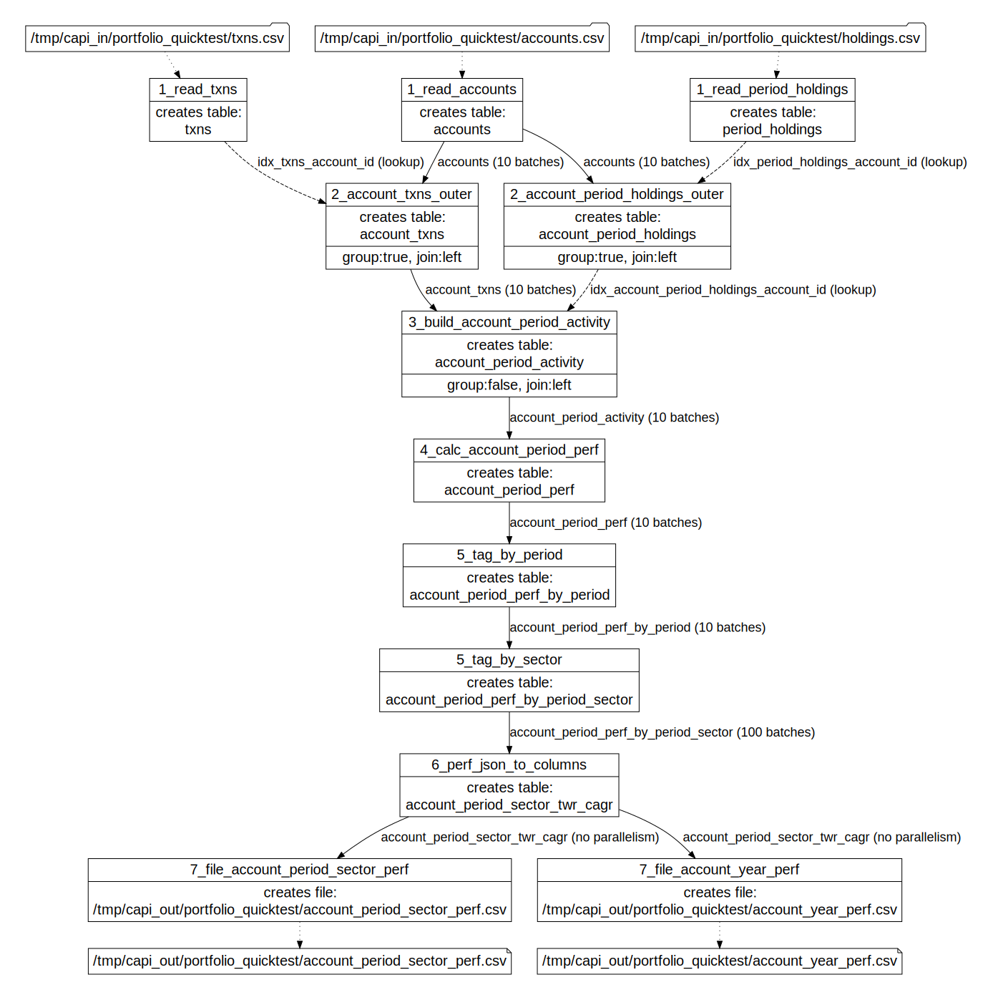

2023-04-08
Use Capillaries to calculate ARK portfolio performance
What is this?
Recently, a new Capillaries integration test was added: Portfolio performance calculation. It mimics the process performed by an investment bank at the end of each quarter or year: for each individual portfolio, combined return rate is calculated for a specific period. This test uses data for six portfolios maintained by ARK, and calculates yearly performance for the whole portfolio and for each sector using time-weighted annualized return (TWR) formula.
What's so cool about it?
The test performs calculations for six portfolios only, but the process can be easily scaled out to tens or hundreds of thousands of portfolios. And this is exactly the challenge that investment bank IT departments are facing on a regular basis: provide each client (there may be hundreds of thousands of them) with a personalized rate of return, and do that, say, overnight.
Why ARK?
Because ARK made their trades info publicly available, so we can claim that this Capillaries test is as close to the real production environment as possible and compare results delivered by Capillaries to the official ARK performance numbers.
What does it do, exactly?
1. Input
This test uses holdings and transaction history for each account, in CSV files:
Accounts
| account_id | name |
|---|---|
| ARKK | ARK Innovation ETF |
| ARKW | ARK Next Generation Internet ETF |
| ARKF | ARK Fintech Innovation ETF |
| ARKQ | ARK Autonomous Tech. & Robotics ETF |
| ARKG | ARK Genomic Revolution ETF |
| ARKX | ARK Space Exploration & Innovation ETF |
| ... | ... |
End-of-month holdings history
| account_id | d | ticker | qty |
|---|---|---|---|
| ARKK | 2020-09-30 | TSLA | 0 |
| ARKK | 2020-12-31 | TSLA | 2660439 |
| ARKK | 2021-03-31 | TSLA | 3757949 |
| ARKK | ... | TSLA | ... |
| ARKK | 2020-09-30 | NVTA | 0 |
| ARKK | 2020-12-31 | NVTA | 17462614 |
| ARKK | 2021-03-31 | NVTA | 15282622 |
| ARKK | ... | NVTA | ... |
Transaction history
| ts | account_id | ticker | qty | price |
|---|---|---|---|---|
| 2020-10-16 | ARKK | TSLA | 2466031 | 439.67 |
| 2020-10-20 | ARKK | TSLA | 18992 | 421.94 |
| ... | ARKK | TSLA | ... | ... |
| 2020-10-16 | ARKK | NVTA | 17671295 | 47.03 |
| 2020-10-30 | ARKK | NVTA | -16630 | 39.21 |
| ... | ARKK | NVTA | ... | ... |
2. Processing
The full DAG of the transforms implemented in the portfolio test script looks as follows:
The test applies Python formulas that calculate time-weighted return (twr) and compound annual growth rate (cagr) using a simulated third-party end-of-day price and company info providers:
# Build ticker-level cf history, build sector cf history, # calculate twr/cagr for each sector def txns_and_holdings_to_twr_cagr_by_sector( period_start_eod, period_end_eod, period_start_holdings, all_txns, eod_price_provider, company_info_provider): ticker_cf_history = txns_and_holdings_to_ticker_cf_history( period_start_eod, period_end_eod, period_start_holdings, all_txns, eod_price_provider) group_cf_history_map = group_cf_history_by_sector( company_info_provider, ticker_cf_history, eod_price_provider) sector_perf_map = {} for sector, group_cf_history in group_cf_history_map.items(): if len(group_cf_history) < 2: twr = 0.0 cagr = 0.0 else: twr, cagr = twr_cagr(group_cf_history) sector_perf_map[sector] = {"twr": round(twr, 4), "cagr": round(cagr, 4)} return sector_perf_map
# Get EOD price for a specific ticker for a specific date class PortfolioTestEodPriceProvider: def get_price(d,ticker): ...
# Returns all available sectors and sector tickers class PortfolioTestCompanyInfoProvider: def get_sectors(): ... def get_sector_tickers(sector): ...
3. Output
As a result, the test produces a CSV file with period returns for each account, per sector:
| ARK fund | Period | Sector | Time-weighted annualized return % |
|---|---|---|---|
| ARKF | 2021 | All | -19.12 |
| ARKF | 2021 | Communication Services | -40.67 |
| ARKF | 2021 | Consumer Cyclical | -22.28 |
| ARKF | 2021 | ... | ... |
| ARKF | 2021Q1 | All | 176.50 |
| ARKF | 2021Q1 | Communication Services | -5.08 |
| ARKF | 2021Q1 | Consumer Cyclical | -19.41 |
| ARKF | ... | ... | ... |
| ARKG | 2021 | Communication Services | 16.66 |
| ARKG | 2021 | Consumer Cyclical | 0.00 |
| ARKG | 2021 | ... | ... |
| ... | ... | ... | ... |
A few technicalities are covered in the integration test README.md file.
How accurate is this calculation?
Quick answer: not very accurate, mostly because of the lack of reliable source data (see Portfolio performance calculation integration test details). But, considering all the shortcomings, time-weighted annualized return % calculated by Capillaries are somewhat close to the official ARK numbers (I am not sure which calculation method they use):
| ARK fund | Period | Capillaries | Official ARK |
|---|---|---|---|
| ARKF | 2021 | -19.12 | -17.70 |
| ARKF | 2022 | -63.35 | -64.99 |
| ARKG | 2021 | -33.84 | -33.89 |
| ARKG | 2022 | -50.87 | -53.94 |
| ARKK | 2021 | -23.98 | -23.36 |
| ARKK | 2022 | -68.07 | -66.99 |
| ARKQ | 2021 | -1.52 | 1.90 |
| ARKQ | 2022 | -61.45 | -46.70 |
| ARKW | 2021 | -19.49 | -16.65 |
| ARKW | 2022 | -65.28 | -67.49 |
| ARKX | 2021 | -10.55 | -5.65 |
| ARKX | 2022 | -48.75 | -34.20 |
UI snapshot
Below is a scraped snapshot of Capillaries UI after running full portfolio performance calculation. Click on the screenshot and navigate through status screens - all blue elements are clickable, buttons are disabled (button tooltips are working though).
The navigation starts at the very top "Keyspaces" level.